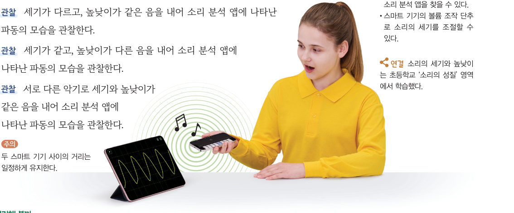
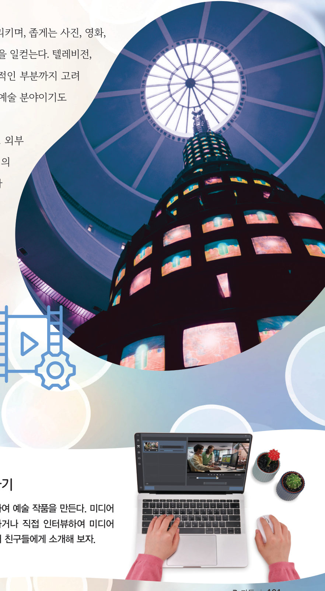

“악보에 따라 연주해 봅시다.” 두 악기가 같은 악보를 연주할 때 내는 소리는 무엇이 같고 무엇이 다를까? 가상 악기와 소리 분석기로 진폭, 진동수, 파형을 비교하고, 내 목소리도 분석해 보자.
🎯 이 단원을 배우면 — 소리의 특성을 진폭, 진동수, 파형 등 과학적 용어로 설명할 수 있다.
교과서파동으로 알 수 있는 소리의 특성은 무엇일까? 116쪽
기타 줄을 튕겨 떨리게 하면 줄의 진동이 공기를 통해 주위로 퍼져 나가며 소리가 전달된다. 이때 줄이 빠르게 진동할수록 주위의 공기도 빠르게 진동하여 높은 소리가 난다. 파동을 전달하는 매질이 1 초 동안 진동하는 횟수를 진동수라고 하며, 단위는 Hz(헤르츠)를 사용한다. 예를 들어 그림 3-16의 파동은 1 초 동안 2 회 진동하므로 진동수가 2 Hz이다.
파동이 전달될 때 파동의 모습을 관찰하면 진폭, 진동수, ●파형(파동의 형태) 등 파동의 특징을 알 수 있다.
1그림 3-16의 파동은 1 초 동안 2 회 진동하므로 진동수가 Hz이다. 진폭은 같고 진동수가 1 Hz인 파동은 1 초 동안 회 진동한다.
탐구 · 디지털 탐구 도구 활용하기디지털 탐구 도구를 이용하여 소리의 진폭, 진동수, 파형 탐구하기 117쪽
스마트 기기 하나에는 악기 연주 앱, 다른 하나에는 소리 분석 앱(오실로스코프)을 실행한다.
악기 하나를 선택해 소리를 내고 소리 분석 앱에 파동이 나타나는 것을 확인한다.
과정 3 세기가 다르고 높낮이가 같은 음을 낸다.
과정 4 세기가 같고 높낮이가 다른 음을 낸다.
과정 5 서로 다른 악기로 세기와 높낮이가 같은 음을 낸다.

117쪽악기 연주 앱과 소리 분석 앱
가상 악기 + 소리 분석기두 소리 비교하기
소리 A와 소리 B의 악기·음·세기를 정하고 ▶를 눌러 들어 보자(스피커 소리 주의). 아래 화면에 두 소리의 파동이 같은 눈금으로 그려져요.
소리 분석기 · 위: 소리 A, 아래: 소리 B (같은 시간 눈금)
1정리해 볼까 과정 3~5에서 두 소리의 무엇이 달라지는지 정리해 보자.
과정 3 · 세기가 다른 소리
과정 4 · 높낮이가 다른 소리
과정 5 · 서로 다른 두 악기의 소리
다르게 해 보기 · 악기 소리 분석하기
실제 악기 여러 개를 연주하며 소리 분석 앱으로 분석하고, 소리의 진폭, 진동수, 파형을 비교해 보자. (위 🎤 버튼으로 목소리나 악기 소리를 분석할 수도 있어요.)
교과서소리에 따라 파동은 어떻게 다르게 나타날까? 118~119쪽
같은 악기로 세기가 다른 소리를 냈을 때에는 큰 소리가 작은 소리보다 진폭이 크다. 이처럼 소리의 세기는 파동의 진폭에 따라 달라진다. 같은 악기로 높낮이가 다른 소리를 냈을 때에는 높은 소리가 낮은 소리보다 진동수가 크다. 이처럼 소리의 높낮이는 파동의 진동수에 따라 달라진다. 진동수가 클수록 매질이 1회 진동하는 데 걸리는 시간이 짧아지고 파장이 짧아진다.
세기와 높낮이가 같은 피아노와 바이올린 소리는 진폭과 진동수는 같지만 파형이 다르다. 사람들이 저마다 목소리가 다른 까닭도 각 목소리의 파형이 다르기 때문이다.
1(가)는 (나)보다 진폭이 진동수가 . (다)는 (나)보다 진폭이 진동수가 . 세 소리는 같은 악기로 연주했으므로 이 같다.
🧩 두 번째 블록 · 힌트 조각 2 (120쪽)
소리를 파동으로 나타내어 진폭, 진동수, ( ) 등을 비교하면 서로 다른 두 소리를 구별할 수 있다.
스스로 확인하기116쪽 학습 목표를 달성했는지 확인해 보자 120쪽
1개념 확인 큰 소리는 작은 소리보다 파동의 이/가 크고, 높은 소리는 낮은 소리보다 파동의 이/가 크다.
2사고력 음성 변조 앱으로 낮은 목소리를 높은 목소리로 변조했을 때 소리의 파동은 원래 소리의 파동과 어떤 차이를 보일지 과학적 용어로 설명해 보자.
과학이 톡빛과 소리로 표현하는 미디어 아트 121쪽

121쪽미디어 아트
미디어 아트는 넓게는 기술을 활용하는 예술을 가리키며, 텔레비전, 컴퓨터 등의 매체로 시각적인 부분뿐만 아니라 청각적인 부분까지 고려하여 작품을 만드는 미술과 음악이 융합된 예술 분야이다. 매체 기술로 실시간으로 외부 환경이나 정보를 반영할 수 있어 작가와 관객의 상호작용이 가능하다.
💬진로와 직업 미디어 아트 작가를 소개하는 짧은 동영상을 만든다면 어떤 내용을 담을지 계획해 보자.
5분 테스트파동으로 알아보는 소리의 특성
1파동을 전달하는 매질이 1 초 동안 진동하는 횟수를 라고 한다.
3피아노의 ‘도’ 음과 ‘솔’ 음이 다르게 들리는 까닭은 소리의 , 북을 세게 칠 때와 약하게 칠 때 다르게 들리는 까닭은 , 피아노와 바이올린 소리가 다르게 들리는 까닭은 이/가 다르기 때문이다.
6큰 소리는 진폭이 , 높은 소리는 진동수가 . 진동수가 클수록 1회 진동하는 데 걸리는 시간이 지고 파장이 진다.
10보기의 파동 중 가장 작은 소리와 가장 낮은 소리를 고르시오.
가장 작은 소리 · 가장 낮은 소리
스스로 정리하기2. 파동 · 두 번째 블록 찾기 122쪽
2파동으로 알아보는 소리의 특성
⑴ : 매질이 1 초 동안 진동하는 횟수(단위: Hz) ⑵ 큰 소리는 작은 소리보다 이/가 크고, 높은 소리는 낮은 소리보다 이/가 크다. ⑶ 진폭과 진동수가 같아도 이/가 다르면 다른 소리가 난다.
🧩 두 번째 블록 찾기 · 동물의 울음소리를 분석하려면 소리의 어떤 특징을 비교해야 할까?
① 소리는 공기와 같은 매질로 에너지와 정보를 전달하는 파동이다. (115쪽) ② 소리를 파동으로 나타내어 진폭, 진동수, 파형 등을 비교하면 서로 다른 두 소리를 구별할 수 있다. (120쪽)
두 조각을 모아 두 번째 블록 질문에 답해 보자. 블록 찾기 성공!
평가 기준
스스로 평가
지식·이해 파동의 발생과 전달을 이해하고 소리의 특성을 파동으로 설명할 수 있는가?
과정·기능 디지털 탐구 도구로 다양한 소리의 특성을 탐구할 수 있는가?
가치·태도 다양한 악기로 소리를 내고 비교하며 과학 감수성을 길렀는가?
제출학생 정보 · 제출하기
모든 활동을 마친 뒤 제출하면 전체가 한 번에 채점되고 피드백이 나타나요. 답안은 선생님 스프레드시트(중2 탭)에 기록돼요.